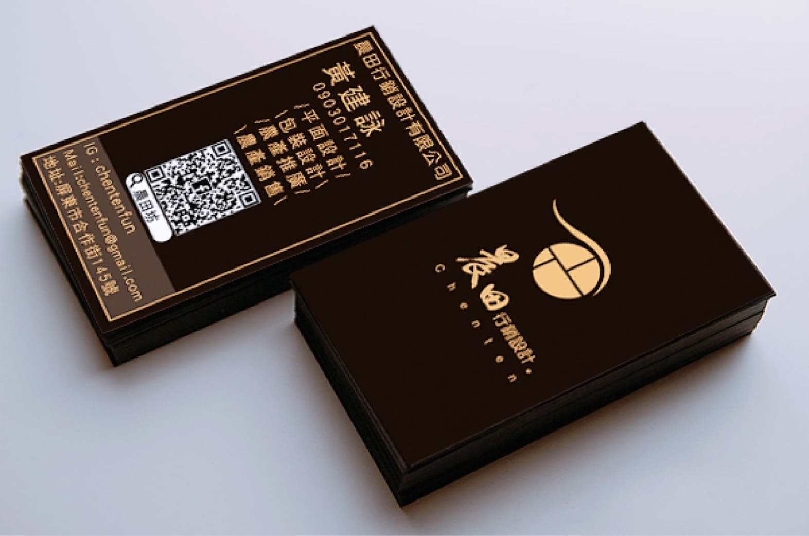
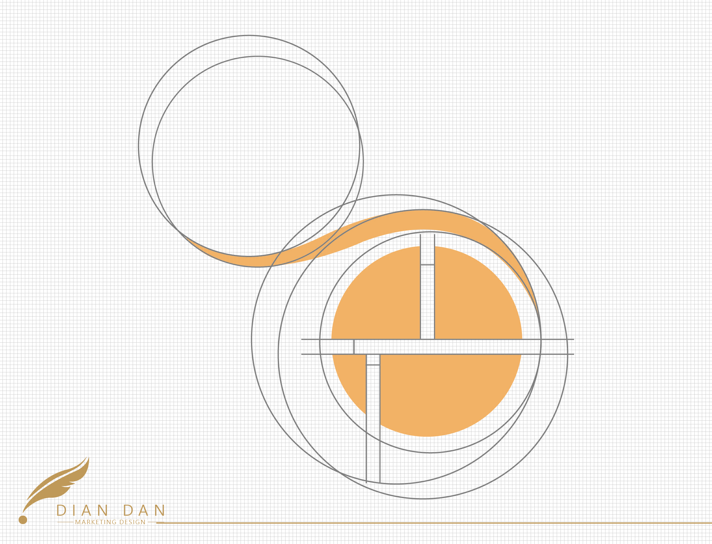

|晨田坊ChenTenFun|
CIS_企業識別設計

設計起源
一群來自屏東的年輕人，推廣自己故鄉的水果，搭起城鄉一間的橋樑。
設計理念：屏東國境之南，全台灣台最熱的地方，而他們是一群來自屏東的熱血青年，他們就像太陽樣熱情，所以採用同太陽的金色作為主色彩。
他們希望故鄉能被看見，因此用了眼睛並將眼球用「田」的型式構建，搭配手寫的書法加強氣勢，來襯托年輕人的熱情。
設計師：JES/陳祺忠

CIS設計、LOGO設計
【乾淨的設計，簡單的晨田】
晨田坊的初衷是以最天然的蔬果與透明無添加的製程，讓所有人品嘗到台灣在地水果最自然的風味。
因此在包裝設計上經協調後我們以簡約、乾淨作為晨田的設計風格，意旨用最簡單的美味滿足最貪呷的消費者。
設計師：JES/陳祺忠